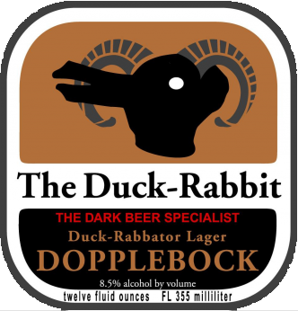

HOME
LAGER
Doppelbock
Duck Rabbit Brewery.
The Duck-Rabbator Dopplebock is a powerfully malty German-style lager. The malty / grainy flavors so dominate this beer, it's like a whole loaf of bread in every glass! Is it a beverage or is it a meal? It's both. ABV: 8.5%
The Duck-Rabbit brewery is located in the small rural eastern North Carolina town of Farmville. There are lots of great beer styles Duck-Rabbit doesn’t brew. Instead, it focuses on dark beers: a set of styles that had been under-represented in the beer market. There is an enormous range of flavor possibilities in dark beers – something for every beer fan! The hope is that this specialization can help to set The Duck-Rabbit apart from other breweries.
Check out their site HERE 